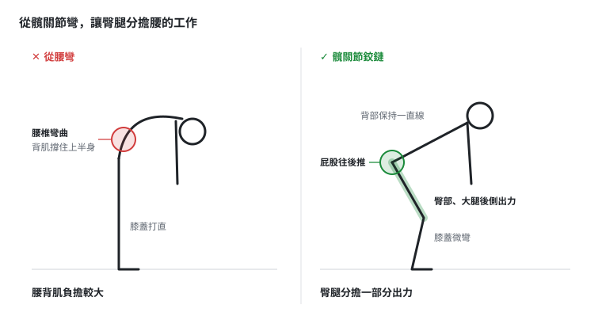
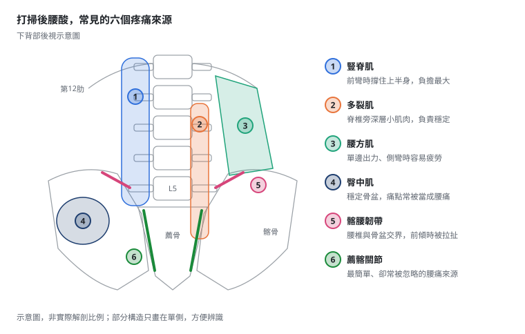
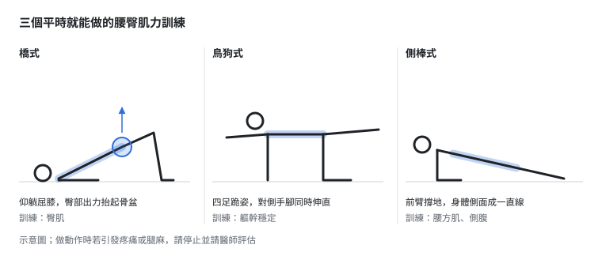

掃地、刷地板後腰酸？居家清潔族的下背痛
前幾天早上，我拿著刷子、身體前傾，用力刷廁所的地板。刷完站起來，腰就開始酸，這一酸持續了快一整天。酸的位置在腰椎下段，有一個很明顯的痛點。以我自己的判斷，比較像是腰薦交界的韌帶，或是薦髂關節附近的區域在抗議。
每天在診間處理腰痛的人，自己也逃不過。很多患者也有類似的經驗：掃地、拖地、刷浴室、彎腰撿東西，做完腰就開始酸，休息一下好一點，下次打掃又來一次。
家事看起來不算劇烈運動，為什麼做完腰這麼容易酸？這篇從原因、常受累的位置、什麼時候要就醫，一路談到怎麼打掃比較不傷腰。
一、做家事，為什麼腰容易酸？
1. 長時間前彎、蹲著做事
彎腰拖地、蹲著刷地板時，上半身的重量是往前掛的。背後的豎脊肌、多裂肌必須一直出力，把身體「吊」住。
這種出力不是動一下就休息，而是持續性的收縮。就像手臂伸直提著一桶水，桶子不算重，提久了手一樣會酸。肌肉長時間繃著，血液循環變差、代謝物堆積，酸痛就這樣累積出來。
2. 單邊、反覆的旋轉出力
拖把、刷子大多習慣用同一隻手、往同一個方向推。每推一下，軀幹都帶著一點旋轉。
一次兩次沒什麼，但幾百下重複下來，負責穩定的腰方肌、多裂肌、臀中肌，一邊做得比另一邊多。所以常有人說「打掃完只有右邊腰酸」，原因往往就在這裡。
3. 髖關節卡住，腰來代償
彎下身的動作，理想上應該由髖關節負責大部分角度，腰椎只做小幅度的配合。
如果大腿後側太緊、髖關節活動度不夠，身體就會改從腰「折」下去。等於把原本髖關節該做的工作，轉嫁給腰椎和背部肌肉。

二、酸的是哪裡？常見受累的結構
打掃後的腰酸，多數和肌肉筋膜的過度使用有關，常見位置包括：
- 豎脊肌、多裂肌：脊椎兩側的長條肌肉與深層小肌肉，前彎撐住身體時負擔最大。
- 腰方肌：位在肋骨下緣到骨盆之間的側後方，單邊出力、側彎旋轉時特別容易累積疲勞。
- 臀中肌、臀小肌：負責骨盆穩定，蹲站反覆、單腳承重時一直在工作，痛點常常會讓人以為是「腰痛」。
除了肌肉，腰椎與骨盆交界處的韌帶（例如髂腰韌帶），以及薦髂關節周圍，也可能在前傾出力時被拉扯而產生疼痛。這類疼痛常集中在腰椎下段、靠近骨盆的位置，而且有一個很明確的痛點，就像我刷完地板那天的感覺。

另外要提醒，原本就有腰椎退化、椎間盤突出、小面關節或薦髂關節問題的人，家事常常只是「誘發」。打掃本身不是病因，而是讓本來就存在的問題浮上檯面。這時候只處理痠痛的肌肉，往往不夠。
在門診，我會用超音波即時觀察肌肉、筋膜、韌帶等軟組織，比較左右兩側，找出主要的疼痛來源。不過椎間盤、神經根這類較深層的問題，超音波看不完整，需要搭配理學檢查，必要時再安排其他影像檢查。
三、這些情況，別只當成「做家事累到」
大部分家事造成的腰酸，休息幾天、調整姿勢後會逐漸緩解。但出現下列狀況，請盡快就醫評估：
- 腿部麻木、無力，或疼痛一路放射到小腿、腳掌
- 大小便控制出現異常，或會陰部感覺變鈍
- 晚上躺著休息也痛，甚至痛到醒來
- 合併發燒、體重不明原因下降
- 酸痛超過一到兩週沒有改善，或反覆發作
前兩項屬於需要立刻處理的狀況，不要拖延。
四、怎麼打掃，比較不傷腰？
1. 用「髖關節鉸鏈」取代彎腰
彎身時，想像屁股往後推、像要用屁股去關身後的門，膝蓋微彎，背部保持一直線。這樣臀部和大腿後側可以分擔一部分出力，腰不必獨自扛下所有負擔。不過要說明，這是讓腰比較省力的做法，並不代表照做就不會腰痛。
2. 刷地板，改成半跪或單膝跪地
與其長時間蹲著又往前彎，不如單膝跪地或雙膝跪地，膝蓋下墊一塊軟墊或毛巾。身體重心比較穩，腰不必一直撐住前傾的上半身。
3. 換長柄工具
拖把、刷子選長柄的款式，握把大約在胸口到肚臍的高度，站直就能施力，減少前彎的角度。
4. 拖地用腳走，不要只靠腰扭
拖地時跨步移動，讓身體跟著拖把走，而不是站在原地靠扭腰左右甩。
5. 分段做、左右換手
每隔一段時間就起身走動、伸展一下。左右手輪流出力，避免同一側一直承受負擔。
6. 撿低處的東西，先蹲再拿
撿地上的東西時，先蹲低再拿起，或扶著桌椅單腳往後抬、身體前傾去撿，盡量避免膝蓋打直、直接彎腰。
五、做完家事後，可以這樣照顧自己
很多人腰一酸就整天躺著不敢動。其實一般的肌肉疲勞，溫和的活動通常比完全休息更有幫助；當然，如果疼痛明顯加劇或出現腿麻，就應該停下來就醫。
打掃完的伸展
- 臀肌伸展：仰躺，一腳翹在另一腳膝蓋上呈「4」字，抱住下方大腿往胸口拉。
- 腰方肌伸展：站姿，一手舉高往對側側彎，感覺側腰被拉開。
- 髖屈肌伸展：弓箭步跪姿，後腳膝蓋著地，骨盆往前推，感覺後腳大腿前側被拉開。
每個動作以溫和、有拉伸感、不疼痛為原則。
平時的肌力訓練
- 橋式：訓練臀肌，幫助髖關節分擔腰的工作。
- 鳥狗式：四足跪姿，對側手腳伸直，訓練軀幹穩定。
- 側棒式：訓練腰方肌與側腹，提升單邊出力時的穩定度。

六、腰酸反覆發作，門診可以怎麼幫忙？
如果腰酸一打掃就來、休息總是好不完全，可能需要更仔細地找出原因。
評估
我會先問清楚什麼動作會痛、痛在哪裡，再做彎腰、後仰、旋轉等理學檢查，並用超音波觀察軟組織狀態，區分是單純肌肉筋膜的勞損，還是背後有腰椎、薦髂關節等其他問題。
中醫有哪些工具可以處理
- 乾針：針對肌肉中的激痛點，幫助緊繃的肌肉放鬆。
- 浮針：在皮下層操作，處理範圍較大的肌肉緊繃與疼痛。
- 小針刀：針對沾黏、張力過高的筋膜或軟組織進行鬆解，可在超音波導引下進行，提高精準度與安全性。
- 中藥調養：反覆勞損、腰膝痠軟無力的人，中醫會依體質辨證，考慮補肝腎、強筋骨、通經絡的方向，幫助身體的修復能力。中藥需經醫師辨證開立，請勿自行購買服用。
- 運動處方：依個人的活動度與肌力狀況，轉介物理治療，安排循序漸進的訓練。
治療前須知
侵入性治療（乾針、浮針、小針刀）可能出現痠脹、瘀青、短暫疼痛加劇等反應，少數有感染或其他風險；凝血功能異常、正在服用抗凝血藥物、懷孕或皮膚有傷口的患者，需事先告知醫師評估是否適合。每個人的狀況與反應不同，治療方式需要當面評估後再決定。
不過要強調：治療可以幫忙減輕當下的不適，但如果打掃的姿勢不變、臀部和核心的力量沒有建立，腰還是會一直替身體扛下工作。改善結構的重要性，遠大於一直放鬆肌肉。
重點整理
- 做家事後腰酸，常見原因是長時間前彎、單邊旋轉出力，以及髖關節活動不足讓腰代償。
- 常受累的是豎脊肌、多裂肌、腰方肌、臀中肌；原本有腰椎問題的人，家事常是誘發因素。
- 腿麻無力、大小便異常、夜間痛、發燒或體重下降，請盡快就醫。
- 打掃時用髖關節鉸鏈、半跪姿、長柄工具、分段換手，有助於分擔腰的負擔。
- 酸痛反覆發作，建議找出真正的疼痛來源，治療之外，搭配運動訓練建立長期穩定。
本文僅供醫療衛生教育參考，不能取代醫師的診斷與治療。每個人的病情、體質與治療反應不同，文中提及的治療方式並非適用於所有人，亦不保證療效；侵入性治療可能伴隨副作用與風險。如有身體不適，請尋求合格醫療專業人員當面評估。
參考文獻
- Dahm KT, Brurberg KG, Jamtvedt G, Hagen KB. Advice to rest in bed versus advice to stay active for acute low-back pain and sciatica. Cochrane Database Syst Rev. 2010;(6):CD007612. doi:10.1002/14651858.CD007612.pub2
- Ribeiro DC, Aldabe D, Abbott JH, Sole G, Milosavljevic S. Dose-response relationship between work-related cumulative postural exposure and low back pain: a systematic review. Ann Occup Hyg. 2012;56(6):684-96. doi:10.1093/annhyg/mes003
- Maillard A, Pasche T, Coenen P, Christe G. The association between trunk flexion and low back pain in blue-collar workers: a systematic review. Work. 2025;84(1):42-51. doi:10.1177/10519815251397391
- Liu C, Zhang D, Si W, et al. Work-related movement and lumbar spine direction: a systematic review of lifting, posture, and pain risk. Int J Occup Med Environ Health. 2026;39(4):348-62. doi:10.13075/ijomeh.1896.02828
- Verbeek J, Martimo KP, Karppinen J, et al. Manual material handling advice and assistive devices for preventing and treating back pain in workers: a Cochrane Systematic Review. Occup Environ Med. 2012;69(1):79-80. doi:10.1136/oemed-2011-100214
- Galliker G, Scherer DE, Trippolini MA, et al. Low back pain in the emergency department: prevalence of serious spinal pathologies and diagnostic accuracy of red flags. Am J Med. 2020;133(1):60-72.e14. doi:10.1016/j.amjmed.2019.06.005
- Nayak BK, Singh DK, Kumar N, Jaiswal B. Recovering from nonspecific low back pain despair: ultrasound-guided intervention in iliolumbar syndrome. Indian J Radiol Imaging. 2020;30(4):448-52. doi:10.4103/ijri.IJRI_382_19